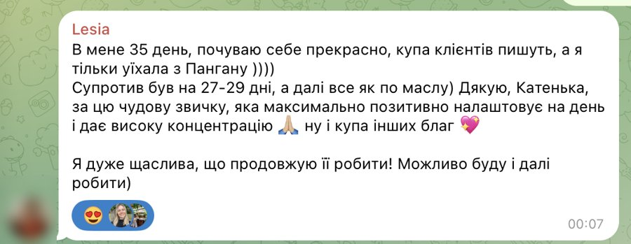
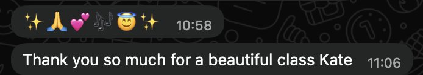
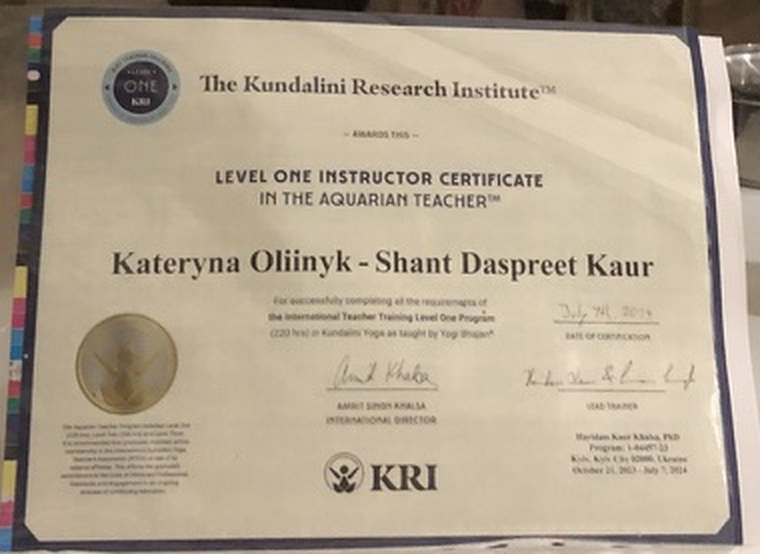

A morning that changes your whole day
A morning energy practice on the open veranda of the Chinese Temple, surrounded by jungle. Suitable for all levels.
A morning energy practice on the open veranda of the Chinese Temple, surrounded by jungle. Suitable for all levels.
Kundalini yoga works with the whole of you at once: movement, breath, meditation and sound. Some come to release stress, some to raise their energy, some to build willpower, and some to connect with higher forces and feel that the world takes care of them. After class you feel focused, strong and light: body toned, mind quiet.
After a morning practice your head is clear and you have more energy than after coffee.
Breathwork and meditation ease anxiety and tension.
Kriyas strengthen your core and back and make your spine more flexible.
Especially valuable if you’ve just arrived on the island and are still finding your place.
We start with a mantra to shift from busy mind to practice.
Gentle movement for the spine and body.
The main part: a set of exercises with breath on the class theme.
Deep rest lying down so the body can absorb the practice.
We finish with meditation and mantra.
Meditations to switch on the parasympathetic nervous system and step out of chronic stress
Love, forgiveness, cutting the cord with the past, healing a broken heart
Kriyas and meditations to boost prosperity in your life
Personal power, self-esteem and willpower
Kundalini yoga has hundreds of kriyas and meditations for all kinds of topics. For example, there are practices for each of the seven chakras:


Screenshots of real messages from students. Swipe to see more.




I'm Kateryna (Shant Daspreet Kaur). I have been teaching kundalini yoga since 2023, and hundreds of students have come to my classes.
I am a KRI-certified teacher (Kundalini Research Institute), the international standard for kundalini yoga teacher training. I completed the Aquarian Teacher Level One programme (220 hours) in Ukraine in 2023–2024.


Free kundalini yoga practices and meditations on YouTube in three languages, plus a Telegram channel.
Yes. You can do every exercise at your own pace, and I'll show easier options.
No. In kundalini yoga breath and attention matter more than flexibility.
Sorry, not during pregnancy: I don't teach prenatal classes. After birth you're welcome from 6 months postpartum. Please check with your doctor first and message me before your first class.
Message me before class, tell me about yourself and I'll let you know whether the practice suits you and how to adapt it.
English.
For me, yoga is a form of service, and I don’t want money to stand in the way of your practice. So classes are by donation: you give what feels right — according to your means and the value you received. As a guide, 0–400 THB. The temple entrance is 100 THB, paid separately.
Message me and I'll tell you when the next class is.